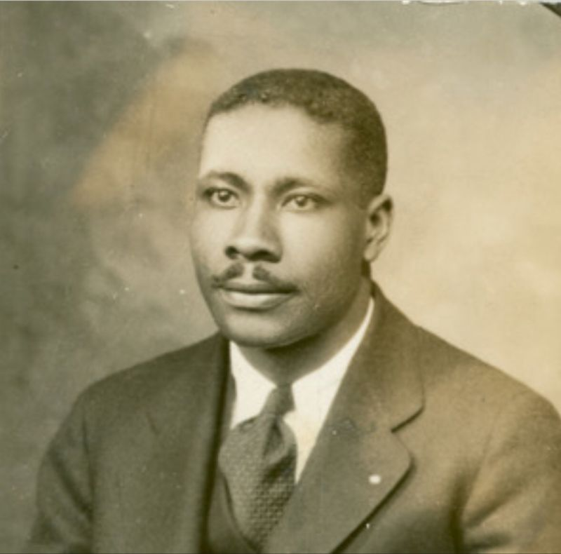

Charles B. Brooks

Charles B. Brooks foi um inventor afro-americano conhecido por suas contribuições inovadoras na área da limpeza urbana. Em 1896, ele patenteou um dos primeiros modelos modernos de caminhões de varrição de ruas, que utilizavam escovas giratórias para limpar eficientemente grandes áreas. Sua invenção ajudou a transformar os métodos de manutenção das cidades, tornando a limpeza pública mais eficaz.
Principais Contribuições
- Inventou um caminhão de varrição de ruas mais eficiente, que melhorou a limpeza das cidades.
- O design de sua máquina incluía escovas giratórias e um sistema de remoção de detritos.
- Sua inovação foi amplamente adotada e serviu de base para os modelos modernos de varredores urbanos.
- Suas patentes contribuíram para o avanço da tecnologia de manutenção de ruas e vias públicas.
Saiba mais
Voltar